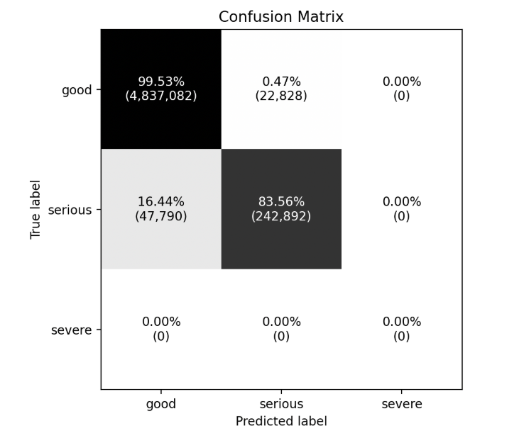

Wyniki i ewaluacja
Predykcja ruchu drogowego
Model generuje prognozy natężenia ruchu drogowego na podstawie danych testowych. Predykcje porównywane są z rzeczywistymi wartościami w celu oceny jakości modelu.
Wizualizacja wyników
Poniżej zaprezentowano wizualizację wyników ewaluacji modelu predykcyjnego w postaci macierzy pomyłek (confusion matrix), która umożliwia ocenę skuteczności klasyfikacji poziomów natężenia ruchu.

Metryki ewaluacyjne
Jakość modelu oceniana jest przy użyciu metryk odpowiednich dla problemów regresji.
- MSE – Mean Squared Error = 0.0104
- MAE – Mean Absolute Error = 0.1018
- RMSE – Root Mean Squared Error = 0.0194
Interpretacja wyników
Otrzymane wyniki potwierdzają wysoką skuteczność zaprojektowanego modelu w prognozowaniu natężenia ruchu miejskiego. Model osiągnął bardzo dobrą jakość predykcji, co potwierdzają niskie wartości błędów regresji oraz wysoka dokładność klasyfikacji na poziomie 99%. Macierz pomyłek wskazuje na niemal idealne rozróżnianie klasy good oraz dobrą skuteczność dla klasy serious. Brak próbek klasy severe w zbiorze testowym ogranicza możliwość pełnej oceny tej kategorii, jednak uzyskane rezultaty jednoznacznie potwierdzają zdolność modelu do odwzorowywania rzeczywistych zależności czasowych w danych ruchu miejskiego.